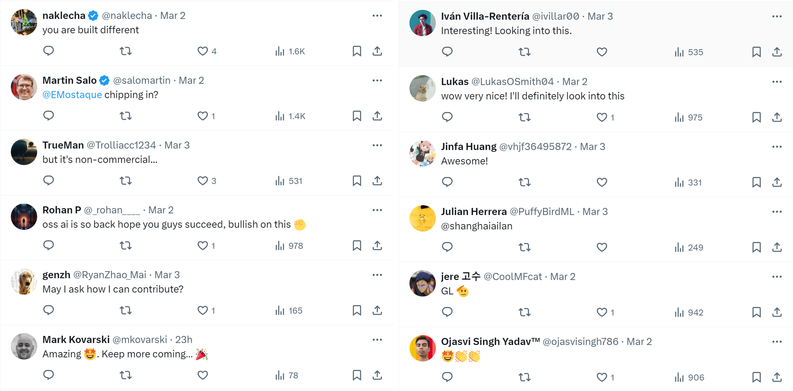
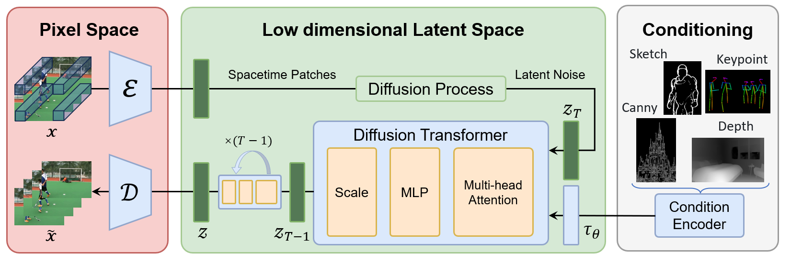

Open Sora Plan
在2024年2月, OpenAI最近推出了Sora, 这是一个开创性的文本到视频模型, 代表了视频生成技术的一个重大飞跃。Sora能够将简短的文本描述转换成详细的、高清的视频片段, 这些片段最长可达一分钟。所提出的Sora推进了AI技术, 并在视频制作中提供了新的创造潜能。
今天, 我们非常兴奋地推出我们的Open Sora项目, 旨在复现OpenAI的视频生成模型, 得到国内外网友的一致期待。

下面, 我们将介绍我们的框架, 它由以下组成部分组成。
- Video VQ-VAE.
- Denoising Diffusion Transformer.
- Condition Encoder.

框架图
实现细节
(1)可变长宽比
我们参考FIT实施了一种动态掩码策略, 以并行批量训练的同时保持灵活的长宽比。具体来说, 我们将高分辨率视频在保持长宽比的同时下采样至最长边为256像素, 然后在右侧和底部用零填充至一致的256x256分辨率。这样便于videovae以批量编码视频, 以及便于扩散模型使用注意力掩码对批量潜变量进行去噪。

动态训练策略
(2) 可变分辨率
在推理过程中, 尽管我们在固定的256x256分辨率上进行训练, 但我们使用位置插值可以实现可变分辨率采样。我们将可变分辨率噪声潜变量的位置索引从[0, seq_length-1]下调到[0, 255]，以使其与预训练范围对齐。这种调整使得基于注意力的扩散模型能够处理更高分辨率的序列。
(3) 可变时长
我们使用VideoGPT中的Video VQ-VAE, 将视频压缩至潜在空间, 并且支持变时长生成。同时, 我们扩展空间位置插值至时空维度, 实现对变时长视频的处理。
10s视频重建(256x)
18s视频重建(196x)
团队
- 林彬: 北京大学
- 袁盛海: 北京大学
- 唐振宇: 北京大学
- 张俊武: 北京大学
- 程鑫华: 北京大学
- 陈柳汉: 北京大学
- 叶阳: 北京大学
- 朱斌: 北京大学
- 葛云阳: 北京大学
- 周星: 兔展AI
- 董少灵: 兔展AI
- 史业民: 兔展AI顾问
- 田永鸿: 北京大学
- 袁粒: 北京大学
贡献者
这个项目旨在创建一个简单且可扩展的仓库, 以尽可能复现Sora。然而, 我们的资源有限, 我们深切希望开源社区能够为这个复现项目做出贡献。